Pay vendors in advance straight from the purchase order, booked on a prepayment account. Every vendor bill of that order then deducts its share automatically and reconciles it, so the prepayment account always clears to zero.
Odoo 16 has down payments for sales, but nothing equivalent on the purchase side.
Four steps, all inside the screens your team already uses.
Screenshots use Odoo 16 demo data: purchase orders for Wood Corner, Azure Interior, Gemini Furniture and Lumber Inc, with 15% purchase tax and a bank journal.
Go to Purchase › Configuration › Settings › Advance Payment and tick Vendor Advance Payments (off by default). A Product (service) and a Prepayment Account (current, non-current or prepayment asset) are then required. Reconciliation is switched on for the account automatically. The module adds no new menus: everything happens on the purchase order, the payment and the bill.
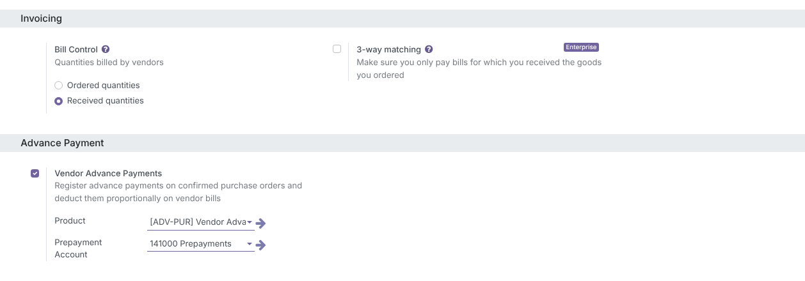
Confirmed orders get a Register Advance Payment button for billing users. The wizard shows the Order Total, what is Already Advanced (Posted) and the Maximum Advance, and asks for the Amount, Journal, Payment Method, Payment Date and Memo (pre-filled with the order number). The button stays available on partly billed orders as long as there is an uninvoiced balance left.
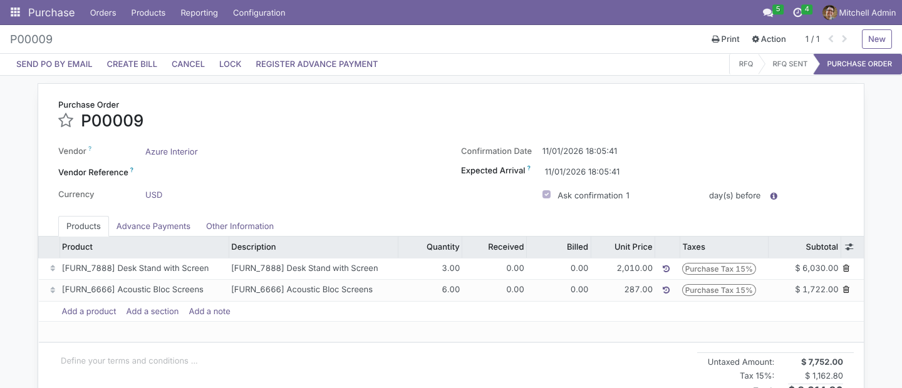
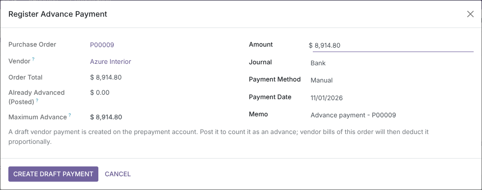
The amount must be positive and must not exceed the order’s remaining uninvoiced balance. The check is repeated when the payment is created, so two people working on the same order cannot over-commit it. Draft advances already reserve their share of the balance.
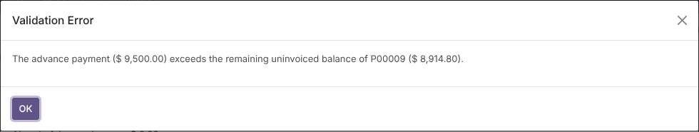
The wizard creates an outgoing vendor payment in Draft, with the order’s vendor and currency, the memo Advance payment - P0000x, and two extra fields: Advance for Purchase Order and Prepayment Account. Review it and click Confirm to post it.
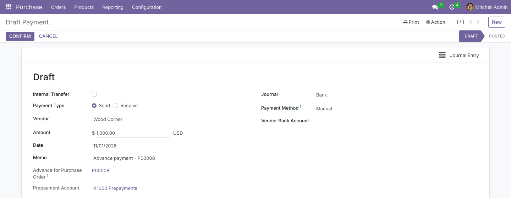
The Advance Payments tab and the Advances smart button show: Total Advance Payments (posted only – it drops again if a payment is reset to draft or cancelled), Advance Payment (%) of the order total, Advance Deducted on Bills, Remaining Advance and Uninvoiced Balance Available for Advance, followed by the list of payments with their status. Below, P00008 has a posted advance of $ 6,072.00 (30%) and a second one still in draft.
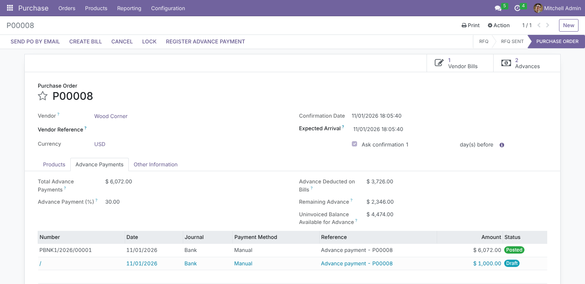
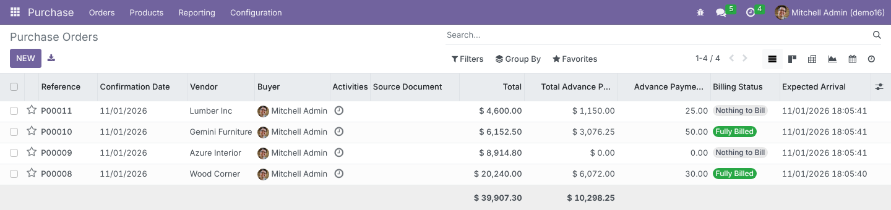
Create Bill adds one line per order with the advance product, the label Advance payment deduction - P0000x, the prepayment account and no taxes. Taxes are still computed on the full purchase, and the Amount Due is the net left to pay. A note in the chatter records the amount and percentage. If an advance is posted after the bill was created, Apply Advance Payments on the draft bill recomputes the deduction.
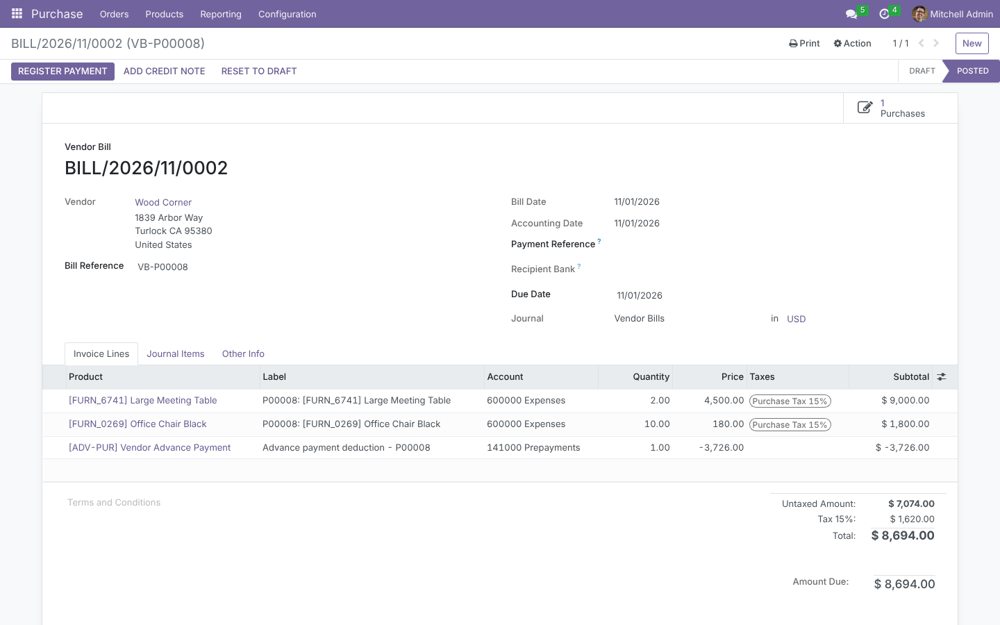
The bill credits the prepayment account with the deduction and the vendor payable with the net amount only. When the bill is posted, the deduction is reconciled with the advance payment’s prepayment line; the payment then shows a Bills smart button listing the bills it settled.
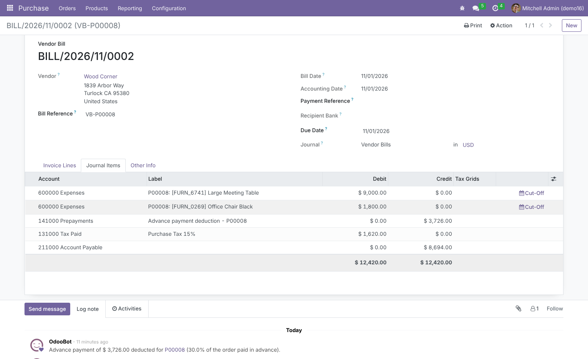
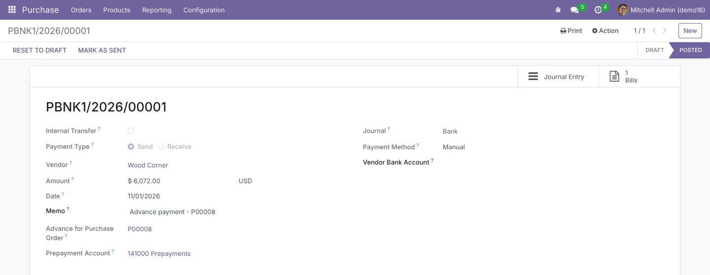
Every label, help text, button and error message ships with an Arabic (ar_001) translation, loaded automatically when Arabic is installed.
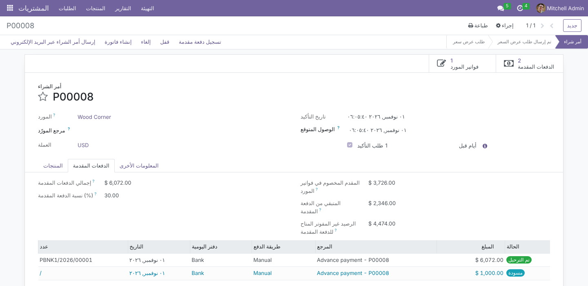
Using the demo order P00008: total $ 20,240.00, advance $ 6,072.00 (30%), first bill for the goods received so far.
| Document | Account | Debit | Credit |
|---|---|---|---|
| Advance payment | Prepayments (asset) | 6,072.00 | |
| Bank outstanding payments | 6,072.00 | ||
| Vendor bill | Expenses (goods received) | 10,800.00 | |
| Tax paid 15% | 1,620.00 | ||
| Prepayments (deduction, reconciled) | 3,726.00 | ||
| Account payable (vendor) | 8,694.00 |
Each of these is covered by an automated test.
Built on Odoo’s standard groups; no new groups to maintain.
| Who | Sees / can do |
|---|---|
| Invoicing › Billing and above | Register Advance Payment, the Advance Payments tab, the Advances smart button and Apply Advance Payments on bills. The wizard also checks write access to the order, so record rules still apply. |
| Purchase users without billing rights | The purchase order as usual; advance buttons, tab and columns stay hidden. |
| Purchase › Administrator | The Advance Payment section in Purchase settings. |
| Multi-company | Settings are per company; the product, prepayment account and journal must belong to the order’s company, and payments are checked against it. |
| Odoo version | 16.0, Community and Enterprise (module version 16.0.1.0.0) |
| Depends on | purchase (which installs account) |
| Python dependencies | None |
| Menus | No new menus; buttons, tab and smart buttons on purchase orders, payments and vendor bills |
| Settings | Purchase › Configuration › Settings › Advance Payment |
| Models | New: purchase.advance.payment.wizard. Extended: purchase.order, account.payment, account.move, account.move.line, res.company, res.config.settings |
| Automated tests | 16 tests: settings saved from the settings screen, wizard limits, draft vs posted totals, full and partial billing, rounding, foreign currency, grouped bills, reconciliation and reversal |
| Translations | English, Arabic (ar_001) |
| License | LGPL-3 |
Questions, a demo, or an adaptation to your own process? Get in touch.
✉ ibrahim.yahiah@gmail.com LinkedIn: Ibrahim YahiaAuthor: Ibrahim Yahia · License: LGPL-3